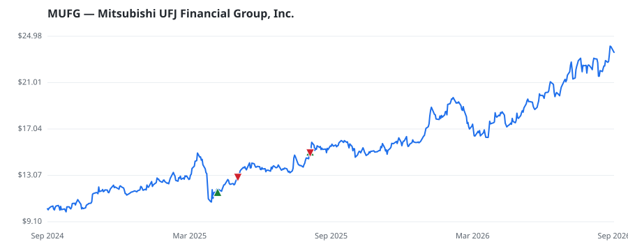

bullish · bearish · n/a — dots: price>SMA10 · SMA10>SMA50 · SMA50>SMA200 · up>down volume (20d)
Other · mega cap
Members who bought MUFG earned a dollar-weighted +36.1% from their disclosure dates, versus +15.2% for the S&P 500 over the same holding windows (+20.9% alpha).

▲ green = a disclosed purchase · ▼ red = a disclosed sale (plotted on disclosure date)
Mitsubishi UFJ Financial Group is the largest bank in Japan in terms of market capitalization and assets. It is the largest non-Chinese bank group globally and has a balance sheet slightly larger than those of JPMorgan Chase and HSBC Holdings. MUFG's operations in Japan account for around half of profit, banking in Thailand and Indonesia for around 15%, and equity-method earnings from Morgan Stanley most of the rest. · website
| Member | Chamber | Out-performer | Disclosed buys $ | Return on buys |
|---|---|---|---|---|
| Lisa McClain | house | — | $8K | +60.3% |
| Bruce Westerman | house | — | $8K | +11.8% |
Disclosed $ figures are bracket midpoints — filings report ranges (e.g. $1,001–$15,000), not exact amounts.
This name produced 0.0% of the ranked funds’ total alpha.
| Fund | Fund alpha vs SPY | Position | % of book |
|---|---|---|---|
| THORNBURG INVESTMENT MANAGEMENT INC | +5% | $24M | 0.2% |
| JCIC Asset Management Inc. | +12% | $3M | 1.0% |
| BAROMETER CAPITAL MANAGEMENT INC. | +16% | $2M | 0.5% |
| Te Ahumairangi Investment Management Ltd | +5% | $0M | 0.1% |
Hedge data: SEC EDGAR 13F · ranked funds beat SPY in >50% of their quarters · fund alpha = mirror-portfolio return minus SPY.